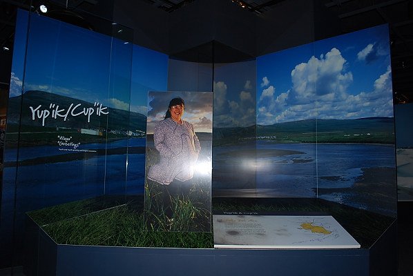

|

This is the Yup'ik and Cup'ik exhibit. There was one of these for each of the 5 cultural groups. The exhibit would fade out in spots and show other things such as fish in the water that were hunted. For some reason, we couldn't capture a picture of that secondary exhibit although we tried several times. |